🏃♂️➡️📕 Rundot


What is Rundot?
Rundot reads markdown files and executes the code blocks in a rich CLI output; turning your markdown files into repeatable procedures.

Use Runbot to build:
- Automated installation scripts.
- Incident runbooks.
- Repeatable tedious multi-step tasks.
- Deterministic procedures for your LLMs to follow.
- Release and publishing checklists.
- Onboarding guides that new contributors can run, not just read.
- Dev environment setup that works the same on every machine.
- Database migrations and backups with the safety checks built in.
- Deploys scripts that ask before they touch anything destructive.
- Living documentation that breaks loudly when it goes stale.
- One-off ops chores you only do twice a year - but always forget!
Example runbook
Save this as hello.md:
---
title: Say hello
inputs:
- name: NAME
description: Who to say hello to
---
# Say hello
A runbook is just markdown. rundot runs the blocks marked `run`, shows the
`docstring` ones, and leaves everything else alone, like this paragraph.
## Greet
```docstring
Saying hello to <NAME>.
```
```sh run
echo "Hello, <NAME>!"
```
## Count the letters
```python run
import os
name = os.environ["NAME"]
print(f"{name} has {len(name)} letters")
```
Check it, then run it:
rundot check hello.md
rundot hello.md
The command check will validate the formatting of your Markdown file to make sure it will work with Rundot.
When running a runbook, rundot asks for the inputs, shows the plan, and runs each step in order.
You can run through each step one at a time with --step and even show the code that will run with each step with --show-code.
Your runbook library
Keep runbooks you use across projects in ~/runbooks, and run them by name from anywhere:
$ rundot library
library: /home/you/runbooks
rebuild-frontend Rebuild the frontend
update-project-deps Update a project's dependencies
$ cd ~/Projects/website
$ rundot rebuild-frontend
A book runs in the folder you're in, so one book works for every project. See Your runbook library.
Why use rundot?
- It's just markdown - A runbook reads like documentation, renders on GitHub, and works fine without rundot.
- Check before you run -
rundot checkfinds broken frontmatter, undeclared placeholders and syntax errors. - See what would happen -
rundot --dry RELEASING.mdshows every command that would run with its inputs filled in. - Inputs and secrets - Ask for values once, check them against a pattern, and keep secrets off the screen / log.
- Manual steps -
confirmblocks pause for the things only a person can do. - A record of every run - An optional transcript keeps every command, its output and how it finished.
- More than shell - Shell and Python blocks are built in, and other languages can be added as backends.
Next steps
- Install rundot
- The runbook format: everything a runbook can contain
- The command line: every command, flag and exit code
- Your runbook library: runbooks you keep for yourself, and run from anywhere
- Backends: the languages rundot runs, and adding your own